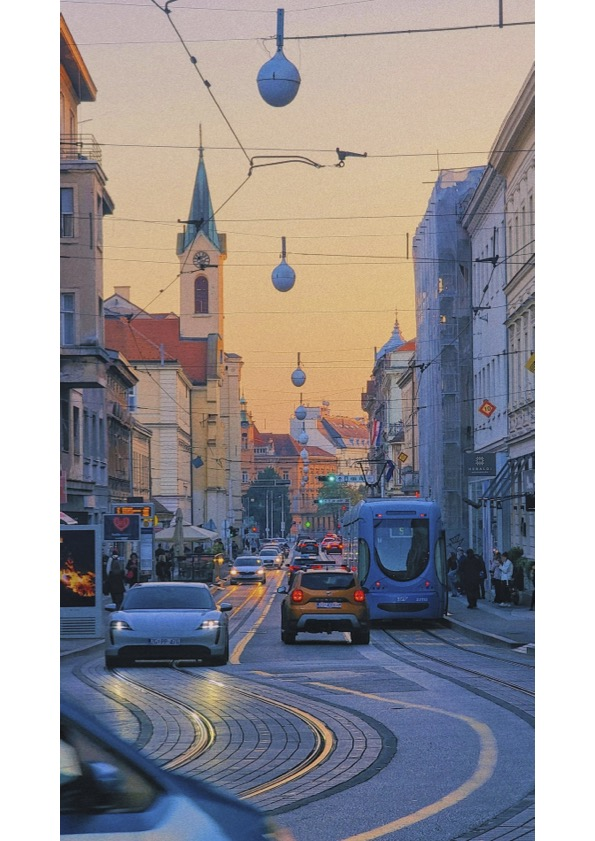
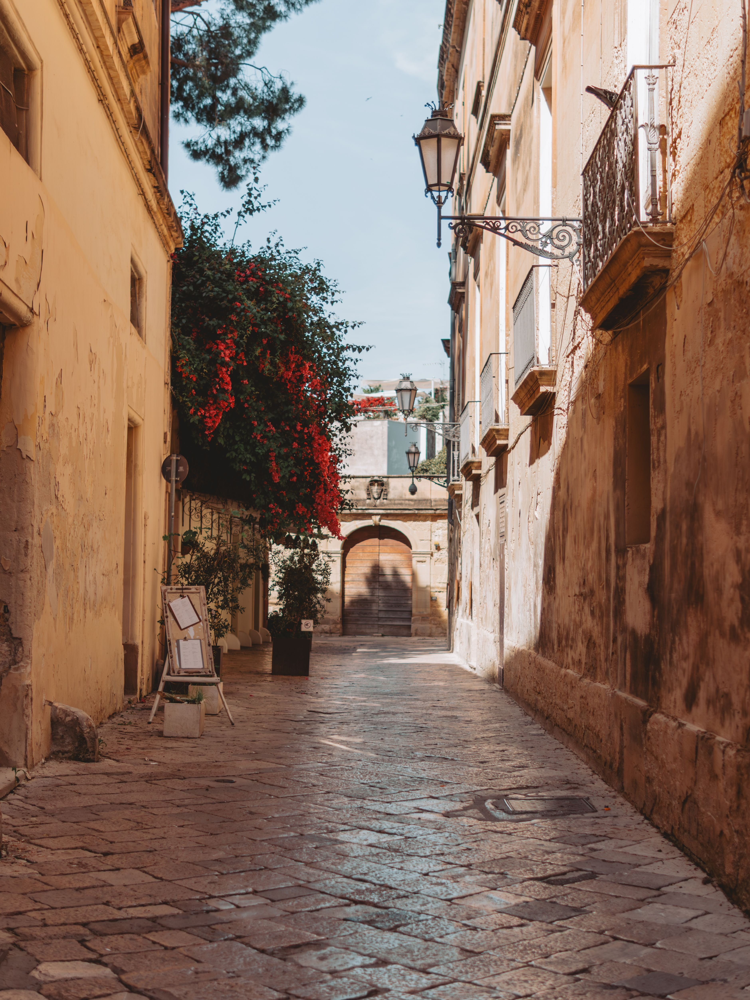
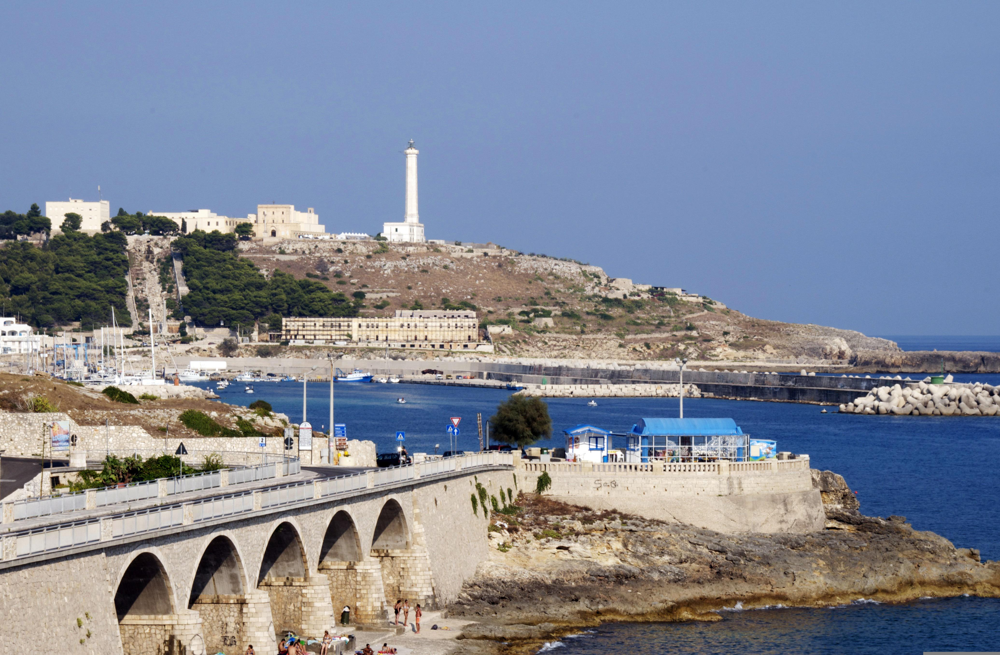

⚠️ No cover for destinations designated "Level 4 – Do Not Travel" by the Australian government, or sanctioned destinations. If any destination on this itinerary is raised to Level 4 after the issue date, check current government travel advice before departing.
📞 Help While Travelling — 24/7 Emergency Assistance
Ferry from Eminonu (~75 mins) · Hire e-bikes at pier · Car-free island
Coastal ride · local lunch · return ferries from ~3 PM
⚠️ Avoid horse-drawn carriages
Personal recommendations from Paul Champion, experienced Istanbul traveller.
🍽 Ciya Sofrasi — HIGHLY RECOMMENDED
Excellent traditional restaurant in Kadikoy on the Asian side. Ferry to Kadikoy then ~10–15 min walk. No bookings — may need to wait ~15 mins but absolutely worth it. 📍 Map · 🌐 World's 50 Best article
Caferağa, Güneşli Bahçe Sok, Kadikoy
🍽 Karaköy Lokantasi
Definitely worth eating at — excellent restaurant in the Karakoy waterfront neighbourhood, just a short walk from your hotel. 📍 Map
🛁 Kılıç Ali Paşa Hamam — Turkish Bath
Beautiful old hammam building in Karakoy. Highly recommended for a traditional Turkish bath experience. Book in advance. 📍 Map
🏛 Istanbul Archaeological Museum
One of Paul's favourite major sights — less visited than Hagia Sophia but exceptional. World-class collection. 📍 Map
⛴ Ferry to Üsküdar
From Beşiktaş or Kabataş — short crossing, very local feel. Walk along the waterfront. Very different to Sultanahmet. 📍 Map

Phase II · Croatia
Zagreb, Croatia
17 – 19 August 2026 · 2 Nights · Artotel Zagreb
⚠️ Early departure Istanbul TK1057 departs Istanbul 7:30 AM — leave Wings Hotel by 5:30 AM. Ref: VQIZH4 · Economy · Seats 10E (Bruce) & 10F (Trudy)
Aqua shoes · boat licence (for jet ski) · warm layer for evenings · 2 bottles French Champagne per couple · passport for Bosnia day (26 Aug) · Dress-up nights: White Night + second themed night TBC
Contact
Peter Williams · peterw@pht.com.au · +61 8 8350 5727 · 0409 826 906
🗺 Route
Rovinj → Pula → Mali Lošinj → Zadar → Kornati → Šibenik → Primosten → Omis/Split → Bol → Hvar → Opuzen/Bosnia → Korčula → Slano → Cavtat → Dubrovnik
📅 Day-by-Day Cruise Schedule
🚢 Wed 19 Aug — Zagreb → Rovinj
Arrive in Zagreb and transfer to your floating home for the next 13 nights — the elegant MV Lady Eleganza, docked in Rovinj. Designed and built in Croatia for cruising the Adriatic Coast, perfect for nestling into the region's small harbours and sheltered coves.
🚌 Coach transfer from Zagreb🌙 Overnight: Rovinj
🚢 Thu 20 Aug — Rovinj → Pula
Explore Rovinj — a gem on Croatia's Istrian peninsula. The picturesque Old Town stands on a headland where quaint houses nestle around the towering Church of St. Euphemia. In the afternoon, sail to Pula to discover the remarkably preserved Pula Arena — the only remaining Roman amphitheatre with all four walls intact, once housing 23,000 spectators for gladiatorial battles.
⛵ Sailing 11:00 AM – 1:30 PM🌙 Overnight: Pula
🗺️ What to Do — Afternoon & Evening
1:30 PM
Pula Arena — walk straight from the dock to this 1st-century Roman amphitheatre. Walk through the underground gladiator chambers or admire it from outside for free. Best light in late afternoon. 📍
Mid-afternoon
Forum Square & Temple of Augustus — a short stroll into the old town. One of the best-preserved Roman temples outside Italy. Grab a coffee at a surrounding café and soak up the atmosphere. 📍
Sunset
Lighting Giants — the old Uljanik shipyard cranes lit up in shifting colours after dark. A striking modern contrast to the ruins; lovely for an evening harbour stroll or a drink at a waterside café. 📍
🍽️ Dinner Recommendations
Restoran La Familia
Authentic Istrian cuisine — mixed salad, soup & a traditional BBQ-style mixed meat platter. 📍
Hook & Cook
Fresh fish sourced direct from local fishermen — try the grilled sea bass or seafood stew. 📍
Epulon Food & Wine
Modern Croatian dining paired with top Istrian wines — a touch more refined. 📍
Try the Fuži
Hand-rolled Istrian pasta spirals — order with truffles, wild mushrooms or a hearty meat sauce. Found on most menus.
Old City Bar
Casual drink in a lively courtyard beside the Church of St. Mary. 📍
🚢 Fri 21 Aug — Pula → Mali Lošinj
Depart Pula and stop for a swim at Unije before continuing to the island of Lošinj. Home to breathtaking bays and rich vegetation, the island's fresh sea air is infused with scents of lavender, sage and rosemary. Dock in Mali Lošinj, characterised by its large natural harbour and elegant pastel waterfront houses.
⛵ Sailing 9:30 AM – 5:00 PM👥 Chris & Karen Hall embark 5:00 PM🌙 Overnight: Mali Lošinj
Docking at 5:00 PM leaves a relaxed evening for a harbourside drink and dinner at a proper local hour — Croatians typically dine between 7–10 PM.
Sunset Drink
Cafe Bar Triton — terrace right on the Riva overlooking the harbour, good range of local & German beers, often live music after dark. 📍
Top Pick — Dinner
Nostromo — excellent seafood right on the water in the marina, overlooking the colourful waterfront houses. Try the seabass tartar or pjukanci pasta with shrimp. 📍
Special Occasion
Restaurant Alfred Keller — Michelin-starred, Boutique Hotel Alhambra, views over Čikat Bay. A little further from the harbour. 📍
Local & Relaxed
Konoba Corrado — posh but unpretentious, great menu of fresh seafood and local meats. 📍
🚢 Sat 22 Aug — Mali Lošinj → Zadar
Sail to lively Zadar, located on a small peninsula on the Dalmatian Coast. Zadar historically rivalled Venice in importance and today retains an impressive collection of Roman ruins that seamlessly blend with the modern city.
⛵ Sailing 8:00 AM – 5:00 PM (swim stop en route)🌙 Overnight: Zadar
🚢 Sun 23 Aug — Zadar → Kornati Islands → Šibenik 🍽 Kornati Lunch Included
Sail via the stunning Kornati Islands — one of the most indented archipelagos in the Mediterranean. Arrive at the waterfront for a special included lunch at Reston Aquarius or Festa restaurant, then continue to the beautiful medieval city of Šibenik.
🍽 Included Tour — Kornati Island Waterfront Lunch
Restaurant: Reston Aquarius or Festa · Lunch at 12:00 noon · Sail departs 9:00 AM · Arrive Šibenik 6:30 PM
Morning visit to beautiful Primosten — a picturesque old town on a small peninsula — before arriving into the Omis/Split area for the afternoon. Explore Croatia's stunning Dalmatian coast.
⛵ Depart 8:00 AM · Primosten 9:30 AM · then Split/Omis🌙 Overnight: Split
A small town originally built on an island, connected to the mainland by causeway since the 16th century — its name comes from the Croatian "primostiti," to bridge.
Old Town Walk
A relaxed ~30-minute loop around the peninsula — narrow stone streets, whitewashed houses, deep blue sea views from the cliffs. 📍
Church of St George
Built in 1485 at the highest point of the old town — sweeping views over the Adriatic and surrounding islands. 📍
Harbour & Markets
A small harbour by Luka beach with a fish market every morning plus a daily fruit & veg market. 📍
Try
Babić — the distinctive local red wine, grown on terraced stone vineyards above the village.
Coffee
Caffe Bar Vlaho — a long-running local institution, top-quality coffee with Adriatic views. 📍
Omiš was once a feared pirate stronghold — for 400 years its fast ships protected the town until the Turkish invasion of 1444. Its annual Pirate Festival lands around 18 August.
Old Town
Stone houses, old city walls, narrow lanes and the Church of St Michael with its picturesque square. 📍
Mirabella Fortress
A small medieval tower above the old town where pirate lookouts once scanned the sea — a short climb for one of the best views of the harbour and Cetina River mouth. 📍
Cetina River Mouth
The promenade where the turquoise river meets the Adriatic against limestone cliffs — lovely for a coffee stop. 📍
🍽️ Dinner in Split (Overnight Stay)
Special Occasion
Bokeria — stylish, buzzy, inside Diocletian's Palace. Try the oxtail risotto or prosciutto pasta. Book ahead. 📍
Traditional Dalmatian
Konoba Varoš or Villa Spiza — rustic, authentic Dalmatian classics. Try the pašticada (slow-cooked beef in sweet sauce with gnocchi). 📍
Seafood with a View
Leonis Restaurant — quiet hidden gem, sunken outdoor terrace, superb squid ink risotto and octopus salad. 📍
Evening Drink
Stroll the Riva promenade — find the spot with the vibe and table you like best. 📍
Note
Dinner doesn't really start before 7–8 PM in Split — Croatians take it slowly, with plenty of wine.
🚢 Tue 25 Aug — Omis → Bol (Brač) → Hvar 🍷 Stina Winery Included
Continue to the breathtaking island of Brač and the coastal town of Bol. The ship anchors offshore and returns for pick up after the winery tour. Then sail on to vibrant Hvar, arriving around 6:00 PM.
🍷 Included Tour — Stina Winery Tour, Bol, Brač Island
Award-winning winery with a legacy dating to the early 1900s when the First Dalmatian Wine Cooperative was established in Bol. Expert staff guide you through white and red Dalmatian varieties. Wine tasting perfectly paired with local olives, artisanal cheeses and cured ham. Winery is next to the port — ship anchors offshore and returns for pick up.
⛵ Depart Omis 7:00 AM · Bol 10:00 AM · Hvar ~6:00 PM🌙 Overnight: Hvar
Hvar's nightlife has shifted in 2026 — new noise regulations cap sound levels and end open-air beach parties earlier, so many bars have introduced silent disco events instead: guests wear wireless headphones and switch between music channels. Surreal and surprisingly fun — take the headphones off and all you hear is laughter and the sea.
Where
Passarola Club — deep house, cocktails, regular silent sets with two DJ channels. 📍
Book Ahead
Capacity is smaller under the new rules — silent disco events sell out quickly, so reserve in advance if possible.
Evening Flow
Sunset drinks (~6:30–9 PM) → dinner in the old town → silent disco from there.
Sunset Spot
Hula Hula Beach Bar — rustic wooden bar with fantastic sunset views, a 15-min walk west of town. 📍
Getting Back
With a 34-passenger ship, you'll likely be moored at the town quay or anchored close by — check with the crew, but small ships typically allow passengers back aboard independently at any hour rather than running a fixed shuttle schedule.
🚢 Wed 26 Aug — Hvar → Opuzen → Bosnia 🚌 Bosnia Safari Included ⚠️ PASSPORT
Sail to Opuzen then travel by coach over the border into Bosnia & Herzegovina. Visit Mostar and its famous World Heritage-listed Stari Most (Old Bridge) arching high above the Neretva River.
🚌 Included Tour — Bosnia River Safari & Lunch at Neretva Tavern ⚠️ BRING PASSPORT
Collected by coach (approx 1 hour transfer) to the Neretva Swamp to board a traditional boat. Experience a unique blend of tradition, nature and hospitality. Arrive at the traditional riverside restaurant — wooden tables, roasted meats, brandy with a smile, tamburitza music. The food is not served, it is shared. Tour / river safari to Villa Neretva / Mostar. Choice of meat or vegetarian.
⛵ Sailing 6:00 AM – 12:00 PM to Opuzen⚠️ Bring passport — crossing into Bosnia & Herzegovina🌙 Overnight: Opuzen
🚢 Thu 27 Aug — Opuzen → Korčula
Arrive this afternoon to stroll along medieval streets flanked by palaces and beautiful town squares. Korčula is one of the best-preserved medieval towns on the Adriatic — often called Little Dubrovnik.
⛵ Depart 7:00 AM · Arrive 2:00 PM🌙 Overnight: Korčula
A slower, more soulful island than Hvar — flower-lined alleyways, long lunches, and famous for Grk wine, a white grape grown only in the village of Lumbarda.
Old Town
Pedestrianised, laid out fishbone-style so the breeze cools the stone buildings — easily explored on foot in an hour or two. 📍
Revelin Tower
13th-century tower at the Town Gate — small fee to climb for a panorama over the red rooftops and Pelješac peninsula. Many visitors miss it. 📍
Wine — Lumbarda
~15 min taxi away — home of Grk, a rare white wine grown nowhere else in the world. Bire Winery (organic, hillside terrace) or Cipre Winery (Grk + local food on-site) are favourites. 📍
Aperitivo
Bokar Wine Bar near Marco Polo House — a flight of 3 wines with a meat & cheese board, around €20, great spot before dinner. 📍
Gelato
Marco Homemade Ice Cream — skip the touristy spots inside the walls, this is where the locals go. Try the fig cheesecake flavour.
🍽️ Dinner Recommendations
The Classic
Konoba Adio Mare — family-run since 1974, right under the bell tower of St Mark's Cathedral. Try the scampi buzara or grilled octopus. 📍
Best of Both
Filippi — fine dining, relaxed vibe, terrace on the Old Town promenade overlooking the channel. Try the homemade makaruni pasta or grilled sea bass. 📍
For a Splurge
LD Restaurant — Korčula's only Michelin star, inside Lešić Dimitri Palace. The shrimp gyoza is famous. 📍
Tapas, Casual
Ignis — tucked down an old town lane, small plates to share. The eggplant tempura with goat's cheese & honey is a favourite. 📍
🚢 Fri 28 Aug — Korčula → Slano 🦪 Mali Ston Oysters Included
Sail from Korčula to Slano, arriving in time for a special coastal experience before a late lunch back on board.
🦪 Included Tour — Mali Ston Oyster Tour, 11:30 AM
Discover the pristine waters and centuries-old shellfish traditions of Mali Ston — celebrated for producing some of the Adriatic's finest oysters and mussels. Board a local boat and glide across the bay to the floating oyster beds, where your host shares the fascinating history and cultivation techniques. Watch as fresh oysters and mussels are pulled straight from the sea, then enjoy a tasting right on the water. Transfer back to the yacht in time for a late lunch.
⛵ Depart 7:00 AM · Arrive Slano 11:00 AM · Oysters 11:30 AM🌙 Overnight: Slano
🚢 Sat 29 Aug — Slano → Cavtat
Morning cruise to the picturesque harbour town of Cavtat. Spend the afternoon exploring, with beautiful beaches and swim stops along the way.
Black risotto — the local specialty, made with octopus or squid.
🚢 Sun 30 Aug — Cavtat → Dubrovnik
Afternoon sail from Cavtat to Dubrovnik — possibly a swim stop en route. Arrive in the jewel of the Adriatic.
⛵ Cavtat 10:00 AM – Dubrovnik 2:00 PM🌙 Overnight: Dubrovnik
🚢 Mon 31 Aug — Dubrovnik
All day in the jewel of the Adriatic. Explore the magnificent old city walls, the marble-paved Stradun, and the crystal-clear waters below the cliffs.
⚓ At anchor all day🌙 Overnight: Dubrovnik
Since you've already explored the Old Town on a previous visit, here's a slower-paced day beyond the walls — no rush, since you're sleeping aboard the ship that night.
9:30 AM
Lokrum Island — short ferry from the Old Town port. Wooded paths, a ruined Benedictine monastery, a swim in the saltwater "Dead Sea" lake, and resident peacocks. Have lunch at one of the simple cafés on the island — no need to rush back. 📍
2:00 PM
Trsteno Arboretum — ~20 min taxi/transfer. The oldest arboretum in this part of the world: 600-year-old plane trees, an old aqueduct, and a Renaissance garden overlooking the sea. Quiet and completely different pace to the Old Town. 📍
5:30 PM
Srđ Hill Cable Car — back into town, then up for sunset. The best view in Dubrovnik: the whole Old Town and islands stretching to the horizon. Restaurant Panorama at the top is a lovely spot for a drink as the light turns gold. 📍
Evening
Back down into the Old Town for a long, unhurried final dinner with a view over the walls and water — no need to watch the clock since you're back on the ship that night.
🏁 Tue 1 Sep — Disembark Dubrovnik
Disembark by 10:00 AM. ✈️ FR6883 Ryanair to Rome departs 10:20 AM — be at Dubrovnik Airport by 9:00 AM.
Phase IV · Italy
Rome, Italy
1 – 3 September 2026 · 2 Nights · The Republic Hotel
✈️ FR6883 Dubrovnik → Rome (Ryanair)
Date & Time
Tuesday 1 September · 10:20 AM → 11:40 AM
Booking Ref
W1RY6Q
Transfer
Bus booked airport → Roma Termini
🚌 Sitbus Transfer — Rome Fiumicino → Roma Termini Booked
Date
Tuesday 1 September 2026 · after FR6883 lands at 11:40 AM
Booking Ref
RYT-NORAX · Provider: Sitbus · Cost: €14.00
Pick Up
Rome Fiumicino Airport — outside Terminal 3, First Parking Lane No. 12
Drop Off
Roma Termini Railway Station — Via Marsala 5 (right-hand side) 📍 Map
Journey
~60 minutes · stops at Via Aurelia and Vatican City en route
Via Marmorata 9 📍 · Metro B: Termini → Piramide (7 mins)
Confirmation
TAWE388H · AUD $165.92
🚄 Frecciargento 8303 Rome → Lecce 1st Class
Date & Time
Thursday 3 September · 08:00 → 14:20 CET (6h 20m)
PNR
SW8VCN · Show to ticket inspector
Trudy Wells
Car 3 · Seat 13A · Ticket: 2835107839
Bruce Wells
Car 3 · Seat 14A · Ticket: 2835107837
Order
UZJA1U3Z7EPZR (ItaliaRail) · E-tickets on smartphone · 🎫 E-Tickets

Phase IV (cont.) · Italy
Lecce, Italy — Arrival Night
3 September 2026 · 1 Night · Arco Vecchio
Arriving Lecce on the Frecciargento at 14:20 — one night before the Puglia Cycling Tour begins on 4 September. Same hotel as booked by Puglia Cycle Tours for Day 1.
€316 total (€79pp) — CASH ON THE NIGHT. Bring euros!
Transport
Taxi/Uber approx €60 return · Enza can arrange if needed
WhatsApp
Full details sent via WhatsApp a few days before
Day-by-Day Cycling Schedule
Salento Bike & Beach · 7 Days · Puglia, Italy
Descriptions below are based on the region — full day-by-day route details from Puglia Cycle Tours will be added when received.
Days 2 & 3 · Ionian SeaGallipoli

Day 4 · The Heel of ItalySanta Maria di Leuca
Days 5 & 6 · Adriatic CoastOtranto
Fri 4 Sep · Day 1Lecce — Arrival
Arrive in Lecce — the jewel of Puglia, nicknamed the 'Florence of the South' for its extraordinary baroque architecture. The old town is a treasure trove of ornate churches, palaces and piazzas, all carved from warm golden local limestone. Explore the magnificent Piazza del Duomo, the Basilica di Santa Croce and the Roman amphitheatre. This evening, attend the Cooking Love class at 6:30 PM in nearby Corigliano d'Otranto — see booking card above.
🏨 Arco Vecchio, Via Quinto Fabio Balbo 5 · +39 0832 243620 📍
Superior Room (Double) · Check-in from 4:00 PM · Check-out Sun 6 Sep 10:00 AM
🚴 Arrival day🌙 Overnight: Lecce
Days 2 & 3
Sat–Sun 5–6 SepGallipoli
Cycle through the Salento countryside to Gallipoli on the Ionian Sea — a fortified island old town connected by a bridge to the mainland, with a magnificent baroque cathedral, a 16th-century castle and some of the best beaches in Puglia. Day 3 is a rest day to explore at leisure, swim in the crystal-clear Ionian Sea, and try the local specialty: sea urchin pasta on the waterfront.
Cycle to the very tip of Italy's heel, where the Adriatic and Ionian seas meet. The town is crowned by the Sanctuary of Santa Maria de Finibus Terrae — Our Lady of the End of the Earth — perched on a cliff above a spectacular waterfall that cascades into the sea. One of the most dramatic points on the entire Italian peninsula.
🏨 Villa Romasi, Via Virgilio 55 · +39 335 491 602 📍
Head north along the Adriatic coast to Otranto — one of the most captivating towns in all of Puglia. Its brilliant white buildings, magnificent 11th-century cathedral with a famous mosaic floor depicting the Tree of Life, imposing Aragonese castle and crystal-clear turquoise sea are not to be missed. Day 6 is a rest day: climb the castle walls for panoramic views, walk the old town and swim in some of Puglia's most beautiful beaches.
🏨 Hotel San Giuseppe, Via Ottocento Martiri 60 · +39 0836 802298 📍
Superior Room (Double) · 2 nights · Check-out Thu 10 Sep 10:00 AM
🚴 Cycling + Rest Day🌙 2 Nights: Otranto
🚴 Wed 9 Sep — Day 6 — Otranto (Rest Day)
A rest day to fully explore Otranto. Visit the stunning Cathedral of Otranto with its famous mosaic floor — a medieval masterpiece covering the entire nave. Climb the Aragonese Castle for panoramic views over the turquoise sea. The beaches north and south of town are some of the most beautiful in Puglia, with remarkable clarity to the water. The old town walls and port are wonderful to explore on foot.
🏨 Hotel San Giuseppe, Via Ottocento Martiri 60 · +39 0836 802298 📍
Superior Room (Double) · Check-out Thu 10 Sep 10:00 AM
🚴 Rest day — explore Otranto🌙 Overnight: Otranto (Rest Day)
Thu 10 Sep · Day 7Otranto → Lecce — La Fine
The final day of the cycling tour returns to beautiful Lecce. Take a last ride through the Salento landscape — olive groves, dry stone walls and trulli — before arriving back in the baroque old town for a celebratory dinner. The streets of Lecce glow golden at night, a perfect farewell to one of Italy's most extraordinary regions.
🏨 Arco Vecchio, Via Quinto Fabio Balbo 5 · +39 0832 243620 📍
Superior Room (Double) · Check-in 4:00 PM · Check-out Fri 11 Sep 10:00 AM
🚴 Final riding day🌙 Overnight: Lecce
Fri 11 Sep🏁 Check-out & Train to Monopoli
Check out of Arco Vecchio by 10:00 AM. Take the train to Monopoli for the next chapter of the adventure — 7 nights of free time on the beautiful Adriatic coast.
Bari Palese → Monopoli ~45km · taxi or hire car recommended
🪂 Skydiving Suggestion — For Jack Idea
Jack's mentioned he's keen to try skydiving while in Puglia. There are very few skydiving operators in the region, but one well-regarded option is within reach of Monopoli.